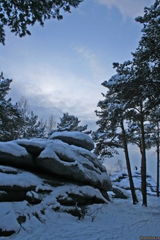
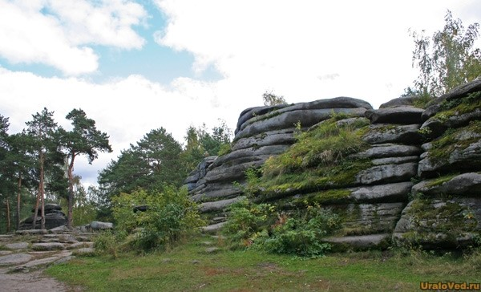

Каменные палатки
Шарташские каменные палатки состоят из нескольких скальных выходов, вытянутых с запада на восток примерно на 80 метров. Высота скальных выходов – от 5 до 18 метров. Высота над уровнем моря – 299 метров, а над уровнем озера Шарташ – 24 метра. Относятся к Шарташскому гранитному массиву, возраст которого 300 миллионов лет.В далеком прошлом в этом месте у наших предков был жертвенник. На вершине скалы (с западной стороны) можно заметить круглую каменную чашу, предположительно использовавшуюся для жертвоприношений.
Первые археологические исследования были проведены на Шарташских каменных палатках в 1889 году Н.А. Рыжниковым. В следующем году изучение продолжили С.И. Сергеев, А.Ф. Комес и другие.
Исследователей конца XIX века подтолкнуло на предположение об искусственном происхождении каменных палаток.
Еще век назад добраться до каменных палаток было не так-то просто. Они располагались в труднодоступном месте, окруженном лесами и болотами. В те времена их называли «Урочище Палатки».
Сейчас на Шарташских каменных палатках в любой день кипит жизнь. Они давно превратились в любимое место отдыха горожан от мала до велика. И не удивительно: всего в нескольких десятках метров от скал — остановка общественного транспорта.  